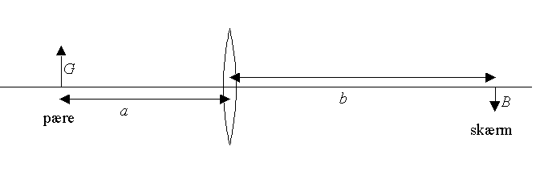
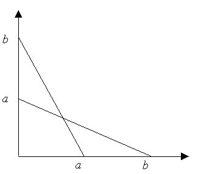
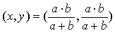
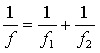

Til forsøget bruges en optisk bænk, en lille elektrisk pære (genstand), en linse og en skærm. Man kan eventuelt bede pænt om et par linser hos den lokale optiker.
Idet afstanden a+b i alle forsøg skal være større end 4f, kan opstillingen godt være længere end en optisk bænk, så stiller man bare holderne på et langt bord.
Der foretages en række målinger, hvor skærmen anbringes i forskellige afstande fra pæren. For hver afstand flyttes linsen til pæren afbildes skarpt på skærmen, dels som et forstørret billede og dels som et formindsket billede. Der er således to positioner af linsen for hver afstand til skærmen.
Målingerne noteres i et skema og brændvidden beregnes som gennemsnit af alle målinger.

Vis, at de to rette linier på figuren herover skærer hinanden i punktet:

.
Vis, at (x, y) = (f, f).
Afbild samtlige målinger i et koordinatsystem som vist til højre og bestem brændvidden, f vha. grafen.
Gentag forsøget med endnu en samlelinse.
Anbring nu de to samlelinser tæt sammen og gentag forsøget.
Vis herved, at brændvidden for linsesystemet er bestemt ved:

Herefter kan en spredelinses brændvidde bestemmes idet den anbringes tæt sammen med en samlelinse med større brændvidde.